Registra cada tanqueo de tu carro o tu moto desde el reloj, mira cuánto te dura la gasolina y recibe un aviso antes de quedarte sin combustible.
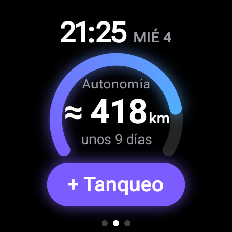
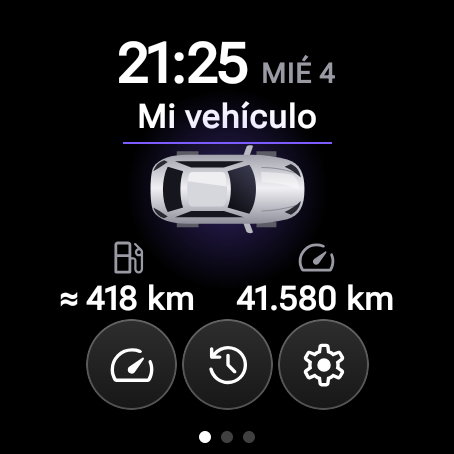
Así funciona la calculadora del reloj: escribe cuánto vas a tanquear y mira cuántos kilómetros y días te dura. Esta versión web usa los valores de referencia de la app.
Capturas reales en un reloj redondo con Wear OS. Desliza para ver todas.
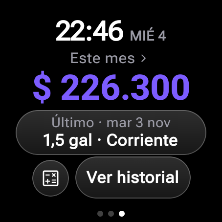
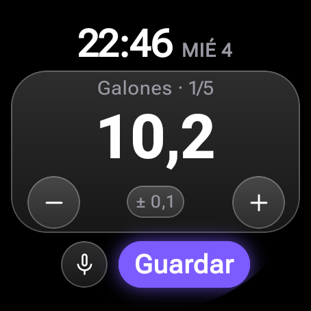
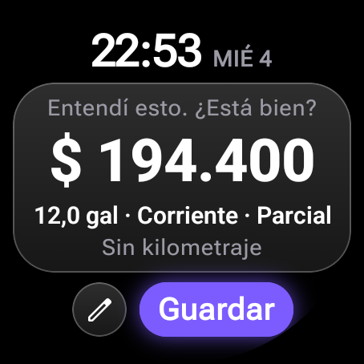
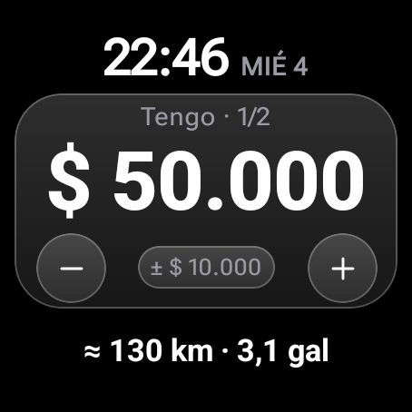
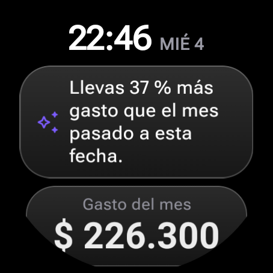
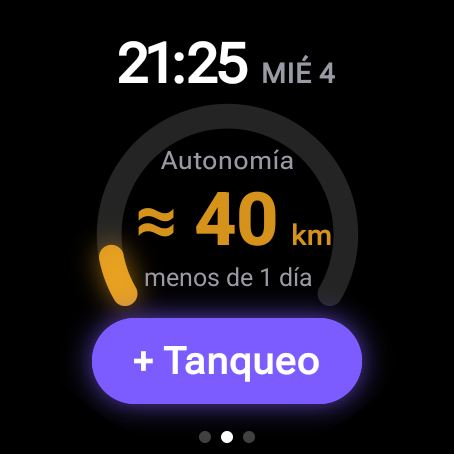
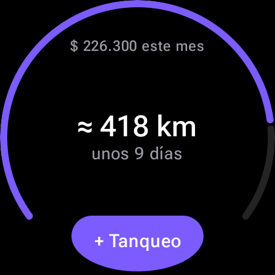
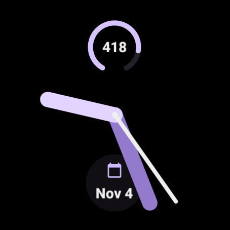
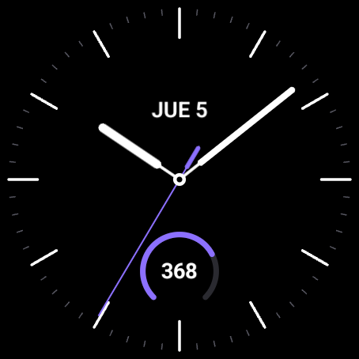
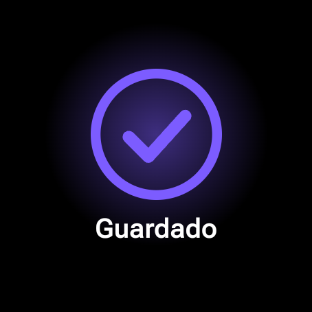
Funciona solo en el reloj, sin app de celular y sin cuenta. La IA es opcional: sin ella, la app calcula todo en el reloj.
Galones, valor, combustible, tanque lleno o parcial y kilometraje, con la corona o el bisel.
Dices “10 galones, 165 mil, corriente, lleno” y la app llena las tarjetas para que revises.
Un anillo tipo medidor con los km, los días y la fecha para volver a tanquear.
Te avisa cuando quedan menos de 50 km o menos de 1 día, revisando cada 12 horas.
Cada vehículo con su propio historial, tanque, rendimiento y autonomía.
Escribes un valor y ves los km, días y galones que te rinde.
Lista y mapa propio con las gasolineras a menos de 5 km, sin Google Maps.
Pregúntale “¿cuánto me demoro de Pasto a Cali en moto?” y responde con tiempo y gasolina.
Los km restantes en la tile y en cualquier carátula del reloj.
App nativa para Wear OS, con datos locales en Room, tareas en segundo plano con WorkManager e IA opcional con Gemini.
Versión 0.1.0 para relojes con Wear OS 4 o superior.
adb install Tanqueo-reloj.apk y ábrela desde el reloj.